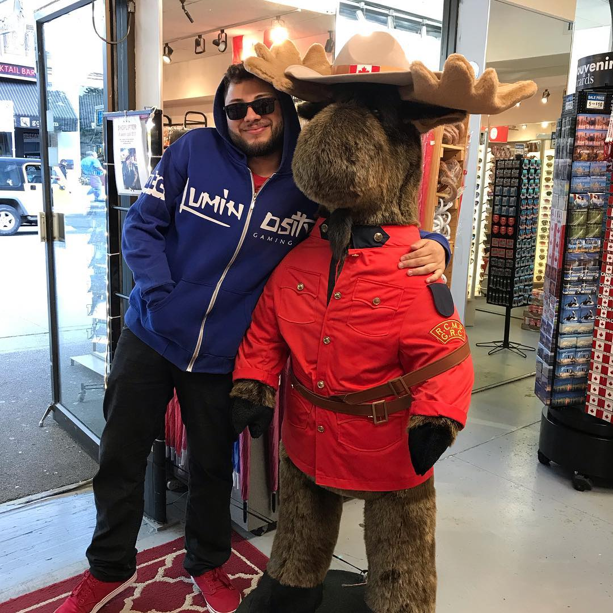

Bruno Alexandre Moreira De Toledo Conceição
Sou Brasileiro, tenho 25 anos, moro em Jacareí/SP. Sou quase formado em ADS, amo muito o universo gamer desde que ganhei meu ps1 com 9 anos de idade, amo animes, series e filmes, quanto ao gênero musical sou bem eclético, porem o meu amor todo esta no bom e velho rock, nas horas vagas gosto de jogar muito mas também curto reunir com os brothers fazer um churrasquinho.